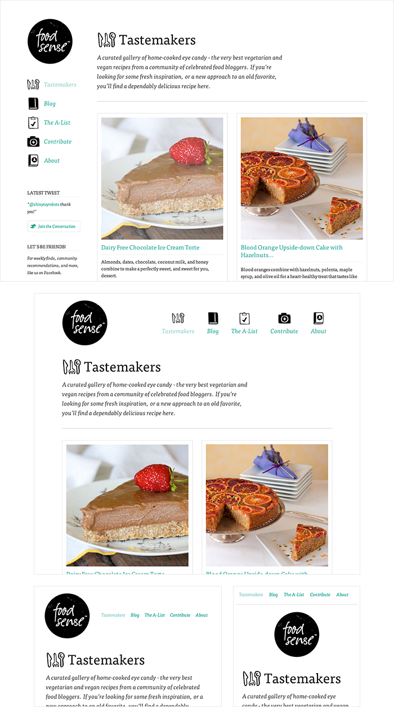

Отзывчивый веб-дизайн
Интернет взлетел быстрее, чем кто-либо мог это предсказать и растёт как сумасшедший. За последние несколько лет вдобавок на сцену ворвались мобильники. Рост потребления мобильного Интернета также опережает общий рост использования Интернета.
В наши дни трудно найти человека, который не владеет мобильным устройством или даже несколькими, подключенных к Интернету. В Великобритании больше мобильных телефонов, чем людей и если данный тренд продолжится, то использование мобильного Интернета превзойдёт настольный Интернет в течение года.
С ростом использования мобильного Интернета возникает вопрос о том, как создавать веб-сайты, подходящие для всех пользователей. Индустрия ответила на этот вопрос отзывчивым веб-дизайном.
Обзор отзывчивости
Отзывчивый веб-дизайн является практикой создания веб-сайта, подходящего для работы на любом устройстве с любым размером экрана, независимо от того, насколько он большой или маленький, мобильный или настольный. Отзывчивый веб-дизайн сосредоточен вокруг представления об интуитивном и приятном опыте для каждого. Настольный компьютер и сотовый телефон пользователя, все они выигрывают от отзывчивых сайтов.
Термин отзывчивый веб-дизайн сам по себе придумал и в значительной степени разработал Итан Маркотт. Многое из того, что рассмотрено в этом уроке было впервые сказано Итаном в сети и в его книге Отзывчивый веб-дизайн, которую стоит прочитать.

Рис. 4.01. Food Sense имеет красивый дизайн, отзывчивый при самых разных размерах окна. Независимо от того, насколько экран большой или маленький, сайт Food Sense подстраивается под него, создавая естественный пользовательский опыт.
Отзывчивый, адаптивный и мобильный
Для некоторых термин отзывчивый может быть не нов, а другие могут быть лучше знакомы с термином адаптивный или мобильный. Для вас может представлять интерес, в чём разница между всеми этими терминами.
Отзывчивый и адаптивный веб-дизайн тесно связаны и часто меняются друг с другом местами. Отзывчивый обычно означает реакцию быстро и положительно реагировать на любое изменение, в то время как адаптивный значит легко приспосабливаться к новой цели или ситуации при их изменении. С отзывчивым дизайном сайты постоянно и плавно меняются в зависимости от различных факторов, таких как ширина окна, а адаптивные сайты строятся на группах предустановленных факторов. Сочетание этих двух идеально, обеспечивая идеальную формулу для функциональных сайтов. Какой термин использовать особо не имеет большой разницы.
Мобильный, с другой стороны, как правило, означает создание отдельного сайта обычно на новом домене исключительно для мобильных пользователей. Хотя в этом иногда есть свой смысл, но обычно это не является хорошей идеей. Мобильные веб-сайты могут быть чрезвычайно лёгкими, но они зависят от нового базового кода и поведения браузера, всё это может стать препятствием как для разработчиков, так и для пользователей.
В настоящее время наиболее популярный метод заключается в отзывчивом веб-дизайне, в пользу дизайна, который динамически адаптируется к различным браузерам и устройствам, меняя макет и контент на этом пути. Это решение содержит преимущества всех трёх: отзывчивого, адаптивного и мобильного.
Гибкие макеты
Отзывчивый веб-дизайн разбивается на три основных компонента, включая гибкие макеты, медиа-запросы и гибкий медиа-контент. Первая часть, гибкие макеты — это практика построения макета сайта с гибкой сеткой, которая способна динамически уменьшать размер до любой ширины. Гибкие сетки строятся с использованием относительных единиц длины, как правило, процентов или единиц em. Эти относительные длины затем применяются, чтобы объявить основные значения свойств сетки, таких как width, margin или padding.
Относительные размеры области просмотра
CSS3 ввёл несколько новых относительных единиц длины, в частности, связанных с размером области просмотра браузера или устройства. Эти новые единицы включают vw, vh, vmin и vmax. Общая поддержка этих новых единиц не велика, но она растёт. Со временем они начнут играть большую роль в построении отзывчивых сайтов.
- vw
- Ширина области просмотра
- vh
- Высота области просмотра
- vmin
- Меньшее значение из ширины и высоты области просмотра
- vmax
- Большее значение из ширины и высоты области просмотра
Гибкие макеты не выступают за использование фиксированных единиц измерения, таких как пиксели или дюймы. Причина в том, что высота и ширина области просмотра непрерывно меняются от устройства к устройству. Макеты сайтов нужно адаптировать к этим изменениям и у фиксированных значений слишком много ограничений. К счастью, Итан вывел простую формулу, которая помогает определить пропорции гибкого макета с помощью относительных значений.
Формула основана на взятии целевой ширины элемента и делении её на ширину родительского элемента. Результатом является относительная ширина целевого элемента.
цель ÷ контекст = результат
Гибкая сетка
Давайте посмотрим, как эта формула работает внутри двухколоночного макета. Ниже у нас есть родитель с классом container, который оборачивает элементы <section> и <aside>. Цель состоит в том, чтобы <section> располагался слева, а <aside> справа, с одинаковыми отступами между ними. Как правило, разметка и стили для этого макета будут выглядеть несколько похоже на следующее.
HTML
<div class="container">
<section>...</section>
<aside>...</aside>
</div>CSS
.container {
width: 538px;
}
section,
aside {
margin: 10px;
}
section {
float: left;
width: 340px;
}
aside {
float: right;
width: 158px;
}Используя формулу гибкой сетки можно взять все фиксированные единицы длины и превратить их в относительные единицы. В этом примере мы воспользуемся процентами, но единицы em будут работать также хорошо. Заметьте, независимо от того, насколько широким становится родительский container, margin и width для <section> и <aside> масштабируются пропорционально.
section,
aside {
margin: 1.858736059%; /* 10px ÷ 538px = .018587361 */
}
section {
float: left;
width: 63.197026%; /* 340px ÷ 538px = .63197026 */
}
aside {
float: right;
width: 29.3680297%; /* 158px ÷ 538px = .293680297 */
}Демонстрация гибкой сетки
Взяв идею гибкого макета с формулой и повторно применяя их ко всем частям сетки, мы создадим полностью динамический сайт, масштабирующийся до любого размера области просмотра. Для ещё большего контроля над гибким макетом можно также использовать свойства min-width, max-width, min-height и max-height.
Одного гибкого макета само по себе недостаточно. Порой ширина браузера может быть настолько мала, что даже пропорциональное масштабирование макета будет создавать слишком узкие колонки для эффективного отображения контента. В частности, когда макет становится слишком мал или слишком велик, текст может стать неразборчивым и компоновка может сломаться. В этом случае могут быть использованы медиа-запросы, которые помогут оставить лучшее впечатление.
Медиа-запросы
Медиа-запросы были построены как расширение типов носителей, которые обычно встречаются при ориентации и включении стилей. Медиа-запросы предоставляют возможность задавать различные стили для отдельных браузеров и поведения устройств, к примеру, ширины экрана или ориентации устройства. Умение применить уникальные стили открывает целый мир возможностей и рычагов для отзывчивого веб-дизайна.
Инициализация медиа-запросов
Есть несколько разных способов применения медиа-запросов — с помощью правила @media в существующей таблице стилей, импорта новой таблицы стилей через правило @import и путём ссылки на отдельную таблицу стилей внутри HTML-документа. Вообще говоря, рекомендуем использовать правило @media внутри существующей таблицы стилей, чтобы избежать каких-либо дополнительных HTTP-запросов.
HTML
<!-- Отдельный CSS-файл -->
<link href="styles.css" rel="stylesheet" media="all and (max-width: 1024px)">CSS
/* Правило @media */
@media all and (max-width: 1024px) {...}
/* Правило @import */
@import url(styles.css) all and (max-width: 1024px) {...} Каждый медиа-запрос может включать в себя тип носителя, за которым следует одно или несколько выражений. Основные типы носителей включают в себя all, screen, print, tv и braille. Спецификация HTML5 содержит новые типы носителей, включая даже 3d-glasses. Если тип носителя не может быть указан, медиа-запросом по умолчанию будет screen.
Выражение медиа-запроса, которое следует за типом носителя может включать в себя различные мультимедийные функции и значения, которые затем считаются истиной или ложью. Когда медиа-функция и значение истинны, стили применяются. Если медиа-функция и значение ложны, то стили игнорируются.
Логические операторы в медиа-запросах
Логические операторы в медиа-запросах помогают построить мощные выражения. Существуют три разных логических оператора, доступных для использования в медиа-запросах: and, not и only.
Использование логического оператора and в медиа-запросе позволяет добавить дополнительное условие и убедиться, что браузер или устройство одновременно выполняет а, б, в и т. д. Несколько отдельных медиа-запросов могут быть разделены запятой, действуя как негласный оператор or (или). В приведённом ниже примере выбираются все типы носителей с шириной между 800 и 1024 пикселей.
@media all and (min-width: 800px) and (max-width: 1024px) {...}Логический оператор not отрицает запрос с указанием любого запроса, но только одного. В приведённом ниже примере выражение применяется к любому устройству, у которого нет цветного экрана. Чёрно-белые или монохромные экраны, к примеру, применяться будут.
@media not screen and (color) {...}Логический оператор only представляет собой новый оператор и не распознаётся браузерами, использующих алгоритм HTML4, что позволяет скрыть стили от устройств или браузеров, которые не поддерживают медиа-запросы. Выражение ниже выбирает только экраны в портретной ориентации на устройствах, способными работать с медиа-запросами.
@media only screen and (orientation: portrait) {...}Опускаем тип носителя
При использовании логических операторов not и only тип носителя может быть отброшен. В этом случае тип носителя по умолчанию принимается all.
Медиа-функции в медиа-запросах
Знание синтаксиса медиа-запроса и принципов работы логических операторов является прекрасным введением в медиа-запросы, но настоящая работа начинается с медиа-функций. Медиа-функции определяют, какие атрибуты или свойства будут направлены в выражение медиа-запроса.
height и width
Одна из наиболее распространённых медиа-функций вращается вокруг определения высоты или ширины области просмотра устройства или браузера. Высота и ширина могут быть найдены с помощью медиа-функций height, width, device-height и device-width. Каждая из этих медиа-функций также может быть использована с префиксом min или max, вроде min-width или max-device-width.
Функции height и width базируются на высоте и ширине области визуализации, окна браузера, к примеру. Функции device-height и device-width с другой стороны основаны на высоте и ширине выходного устройства, которое может быть больше, чем фактическая область визуализации. Значением этих медиа-функций может быть любая единица длины, относительная или абсолютная.
@media all and (min-width: 320px) and (max-width: 780px) {...}В отзывчивом дизайне наиболее часто используемые функции включают min-width и max-width. Они помогают построить отзывчивые веб-сайты на компьютерах и мобильных устройствах одинаково, избегая путаницы с особенностями устройств.
Использование префиксов min и max
Префиксы min и max могут быть использованы со многими медиа-функциями. Префикс min указывает значения больше или равно, тогда как префикс max указывает значения меньше или равно. Использование префиксов min и max позволяет избежать конфликта с общим синтаксисом HTML, без специального задействования символов < и >.
orientation
Медиа-функция orientation определяет, находится ли устройство в альбомной (landscape) или портретной (portrait) ориентации. Режим landscape срабатывает, когда дисплей шире, чем высота, режим portrait срабатывает, когда высота дисплея больше ширины. Эта медиа-функция играют роль в основном с мобильными устройствами.
@media all and (orientation: landscape) {...}aspect-ratio
Функции aspect-ratio и device-aspect-ratio определяют соотношение ширины к высоте в пикселях целевой области визуализации или устройства вывода. Префиксы min и max доступны для использования с различными функциями, выявляя соотношения выше или ниже того, о котором говорится.
Значение функции состоит из двух положительных целых чисел, разделённых косой чертой. Первое число задаёт ширину в пикселях, а второе число задаёт высоту в пикселях.
@media all and (min-device-aspect-ratio: 16/9) {...}pixel-ratio
Кроме медиа-функции aspect-ratio есть также функция pixel-ratio. Она включает функцию device-pixel-ratio, также с префиксами min и max. В частности, эта функция отлично подходит для определения устройств высокой чёткости, в том числе дисплеев ретина. Медиа-запрос для этого выглядит следующим образом.
@media only screen and (-webkit-min-device-pixel-ratio: 1.3), only screen and (min-device-pixel-ratio: 1.3) {...}resolution
Медиа-функция resolution определяет разрешение устройства вывода в виде плотности пикселей, также известной как число точек на дюйм или DPI. Функция resolution также принимает префиксы min и max. Кроме того, функция resolution принимает число точек на пиксель (1.3dppx), точек на сантиметр (118dpcm) и другие размеры на основе значений разрешения.
@media print and (min-resolution: 300dpi) {...}Другие медиа-функции
Другие функции включают в себя определение доступных выходных цветов с помощью color, color-index и monochrome, выявление растровых устройств через функцию grid, а также определение процесса сканирования телевизора функцией scan. Эти функции менее распространены, но столь же полезны при необходимости.
Поддержка медиа-запросов в браузерах
К сожалению медиа-запросы не работают в Internet Explorer 8 и ниже, а также других устаревших браузерах. Есть, однако, пара подходящих костылей написанных на JavaScript.
Respond.js представляет собой облегчённый костыль, он ищет только min/max-width и должен идеально подходить там, где используются только эти медиа-запросы. CSS3-MediaQueries.js более развит и тяжелее, и предлагает поддержку более широкого множества более сложных медиа-запросов. Кроме того, имейте в виду, что любой костыль может иметь проблемы с производительностью и потенциально замедлить сайты. Убедитесь, что любой подобный костыль заслуживает снижения производительности.
Демонстрация медиа-запросов
Используя медиа-запросы мы сейчас перепишем гибкие макеты, которые построили ранее. Одна из текущих проблем в демонстрации появляется, когда ширина <aside> становится безуспешно маленькой на небольших экранах. Добавив медиа-запрос для области просмотра ниже 420 пикселей в ширину, мы можем изменить макет, отключив float и изменив ширину <section> и <aside>.
@media all and (max-width: 420px) {
section, aside {
float: none;
width: auto;
}
}Рис. 4.02. Без каких-либо медиа-запросов <section> и <aside> становятся слишком узкими. Возможно, даже чересчур, чтобы содержать любой реальный контент.
Рис. 4.03. С помощью медиа-запросов мы убираем float и меняем ширину <section> и <aside>. Теперь они занимают всю ширину области просмотра, добавляя свободное пространство существующему содержимому.
Определение контрольных точек
Ваш инстинкт может подсказать писать контрольные точки в медиа-запросах основываясь на основных размерах области просмотра, как это определено разными разрешениями устройств, таких как 320px, 480px, 768px, 1024px, 1224px и т. д. Это плохая идея.
При построении отзывчивого сайта следует настроить массив различных размеров области просмотра, независимо от устройства. Контрольные точки должны быть введены только когда сайт начинает рушиться, выглядит странно или этому препятствует опыт.
Кроме того, всё это время выходят новые устройства и разрешения. Попытка идти в ногу с этими изменениями это бесконечный процесс.
Сначала мобильные
Один из популярных методов использования медиа-запросов называется «сначала мобильные». Данный подход включает в себя использование стилей, ориентированных на более мелкие экраны как стили по умолчанию для сайта, а затем использование медиа-запросов, чтобы добавить стили по мере роста экрана.
Вера в мобильные заключается в том, что пользователь мобильного устройства обычно использует меньший экран и не должен загружать стили для настольного компьютера, которые перепишут мобильные стили позже. Это пустая трата трафика. Трафик это ценность для любых пользователей, которые ищут реактивный сайт.
Подход «сначала мобильные» также учитывает в дизайне ограничения мобильного пользователя. В недалеком будущем большинство интернет-соединений будет сделано на мобильных устройствах. План состоит в том, что для этого соответственно и развивать важный мобильный опыт.
Контрольные точки медиа-запросов с учётом «сначала мобильные» могут выглядеть следующим образом.
/* Сперва стили по умолчанию, затем медиа-запросы */
@media screen and (min-width: 400px) {...}
@media screen and (min-width: 600px) {...}
@media screen and (min-width: 1000px) {...}
@media screen and (min-width: 1400px) {...}Кроме того, загрузка ненужных ресурсов может быть остановлена с помощью медиа-запросов. Вообще говоря, удаление теней, градиентов, трансформации и анимации в мобильных стилях сама по себе неплохая идея. При их чрезмерном применении они вызывают тяжёлую нагрузку и даже могут сократить время работы батареи.
/* Стили по умолчанию */
body {
background: #ddd;
}
/* Стили для больших устройств */
@media screen and (min-width: 800px) {
body {
background-image: url("bg.png") 50% 50% no-repeat;
}
}Демонстрация
Добавив медиа-запросы к нашему предыдущему примеру, мы перепишем несколько стилей, чтобы макет выглядел лучше на экранах меньше 420 пикселей в ширину. Переписывая этот код, мы вначале добавим мобильные стили по умолчанию, затем медиа-запросы для настройки экранов с шириной более 420 пикселей, следующим образом:
section,
aside {
margin: 1.858736059%;
}
@media all and (min-width: 420px) {
.container {
max-width: 538px;
}
section {
float: left;
width: 63.197026%;
}
aside {
float: right;
width: 29.3680297%;
}
}Сначала мобильные
Заметьте, здесь такое же количество кода, что и раньше. Единственным исключением является то, что мобильные устройства требуют только единственную запись CSS. Остальные стили отложены и загружаются только на больших экранах и сделано это без переписывания начальных стилей.
viewport
Мобильные устройства в наши дни, как правило, довольно прилично выполняют работу по отображению сайтов. Иногда им может понадобиться небольшая помощь, связанная, в частности, с определением размера области просмотра, масштабированием и разрешением сайта. Чтобы исправить это, Apple внедрил метатег viewport.
Рис. 4.04. Хотя это всего лишь демонстрация медиа-запросов, многие мобильные устройства до сих пор не знают о начальной ширине или масштабировании сайта. При этом они могут не препятствовать медиа-запросам.
Высота и ширина области просмотра
Использование метатега viewport со значениями height или width будет определять, соответственно, высоту или ширину области просмотра. Каждое значение принимает либо положительное целое число, либо ключевое слово. Для свойства height принимается ключевое слово device-height, а для свойства width принимается ключевое слово device-width. С помощью этих ключевых слов будет наследоваться ширина и высота устройства по умолчанию.
Для достижения наилучших результатов и красиво выглядящего сайта рекомендуется использовать значения устройства по умолчанию путём применения device-height и device-width.
<meta name="viewport" content="width=device-width">
Рис. 4.05. Разрешив устройствам узнать предполагаемую ширину сайта, device-width в данном случае, это позволило сайту принять правильный размер и подобрать любые точные медиа-запросы.
Масштабирование области просмотра
Для управления масштабированием сайта на мобильном устройстве и насколько пользователи могут его масштабировать, применяются свойства minimum-scale, maximum-scale, initial-scale и user-scalable.
initial-scale для сайта должно быть установлен в 1, так как это определяет соотношение между высотой устройства в портретной ориентации и размером области просмотра. Если устройство находится в альбомном режиме, то это будет соотношение между шириной устройства и размером области просмотра. Значением initial-scale всегда должно быть положительное целое число от 0 до 10.
<meta name="viewport" content="initial-scale=2">Рис. 4.06. Использование целого числа больше 1 будет увеличить сайт больше, чем масштаб по умолчанию. Вообще говоря, это значение наиболее часто устанавливается в 1.
Значения minimum-scale и maximum-scale определяют, насколько область просмотра может масштабироваться в меньшую и большую стороны. При использовании minimum-scale значение должно быть положительным целым числом меньше или равным initial-scale. Используя те же рассуждения, значение maximum-scale должно быть положительным целым числом больше или равным initial-scale. Оба значения также должны быть от 0 до 10.
<meta name="viewport" content="minimum-scale=0">Вообще говоря, эти значения не должны быть установлены на то же значение, что и initial-scale. Это позволит отключить любое масштабирование, которое может быть выполнено взамен применения значения user-scalable. Установка значения user-scalable в no отключит любое масштабирование. В качестве альтернативы, установив значение user-scalable в yes мы включим масштабирование.
Выключение возможности масштабирования сайта является плохой идеей. Это вредит доступности и удобству, мешая людям с ограниченными возможностями просматривать сайт по желанию.
<meta name="viewport" content="user-scalable=yes">Разрешение области просмотра
Давая браузеру решать, как масштабировать сайт основываясь на любых значений масштаба области просмотра, обычно делают один трюк. Когда требуется больше контроля, в частности, над разрешением устройства, может быть использовано значение target-densitydpi. target-densitydpi принимает несколько значений, включая device-dpi, high-dpi, medium-dpi, low-dpi или конкретное число точек на дюйм.
Значение target-densitydpi применяется редко, но оно чрезвычайно полезно, когда необходим попиксельный контроль.
<meta name="viewport" content="target-densitydpi=device-dpi">Комбинация значений
Метатег viewport принимает отдельные значения наряду с множеством значений, позволяя установить несколько свойств за раз. Установка нескольких значений требует разделения запятыми в значении атрибута content. Одно из рекомендованных значений приведено ниже, в котором используются свойства width и initial-scale.
<meta name="viewport" content="width=device-width, initial-scale=1">
Рис. 4.07. Комбинация width=device-width и initial-scale=1 обеспечивает начальный размер и требуемое масштабирование.
Правило @viewport
Поскольку метатег viewport вращается преимущественно вокруг установки стилей, которые определяют как должен отображаться сайт, то рекомендуем переместить его из HTML в правило @viewport в CSS. Это помогает сохранить стиль отдельно от содержания, обеспечивая более семантический подход.
В настоящее время в некоторых браузерах уже реализовано правило @viewport, однако поддержка не так повсеместна. Ранее рекомендованный метатег viewport будет выглядеть следующим правилом в CSS.
@viewport {
width: device-width;
zoom: 1;
}Гибкий медиа-контент
Последний, но не менее важный аспект отзывчивого веб-дизайна включает гибкий медиа-контент. Когда начинает меняться область просмотра, медиа-контент не всегда под это подстраивается. Изображения, видео и другой медиа-контент должен быть масштабируемым, меняя свой размер при изменении размера области просмотра.
Быстрый способ сделать медиа-контент масштабируемым — это использовать свойство max-width со значением 100%. Это гарантирует, что при уменьшении области просмотра любой медиа-контент будут уменьшаться в соответствии с шириной контейнеров.
img, video, canvas {
max-width: 100%;
}Демонстрация гибких изображений
Встраивание гибкого медиа-контента
К сожалению, свойство max-width не очень хорошо работает для всех случаев медиа-контента, в частности, для <iframe> и встраиваемого медиа-контента. Когда дело доходит до внешних сайтов вроде YouTube, которые используют <iframe> для встраиваемого медиа-контента, это огромное разочарование. К счастью, есть решения.
Чтобы встраиваемый медиа-контент был полностью отзывчивым, элемент должен быть позиционирован абсолютно в родительском элементе. У родителя width должен быть 100%, чтобы он мог масштабироваться, основываясь на ширине области просмотра. Родительский элемент также должен иметь height равный 0, чтобы включить механизм hasLayout в Internet Explorer.
Затем добавляем padding снизу родительского элемента, значение которого устанавливается таким же, что и соотношение сторон видео. Это позволяет высоте родительского элемента быть пропорциональной его ширине. Помните формулу гибкого макета? Если у видео соотношение сторон 16:9, то 9 разделить на 16 будет .5625, таким образом требуется нижний padding равный 56.25%. padding снизу, а не сверху используется специально для предотвращения Internet Explorer 5.5 от поломки и лечения родительского элемента, как абсолютно позиционированного.
HTML
<figure>
<iframe src="https://www.youtube.com/embed/4Fqg43ozz7A"></iframe>
</figure>CSS
figure {
height: 0;
padding-bottom: 56.25%; /* 16:9 */
position: relative;
width: 100%;
}
iframe {
height: 100%;
left: 0;
position: absolute;
top: 0;
width: 100%;
}Демонстрация гибкого видео
Ресурсы и ссылки
- Responsive Web Design на A List Apart
- Viewport Percentage Lengths на W3C
- CSS Media Queries на CSS-Tricks
- Mobile First Presentation от Luke Wroblewski
- An Introduction to Meta Viewport and @viewport на Dev.Opera
См. также

Все материалы сайта доступны по лицензии Creative Commons «Attribution-NonCommercial» («Атрибуция — Некоммерческое использование») 4.0 Всемирная, если не указано иное.